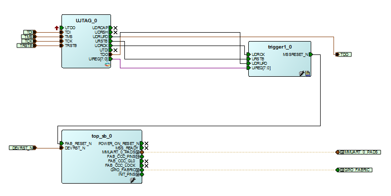

Arm¶
Debug launch configuration settings differ for Cortex-M and RISC-V¶
Be aware that the debug launch configuration settings are different for Cortex-M and RISC-V targets as explained above. The default settings may not automatically match the target CPU. Care must be taken to ensure that the correct configuration settings are applied especially on the Debugger tab. The easiest way to avoid problems is to use the example workspace debug launch configurations as a guide or copy the appropriate one and then customize and specific settings.
Debug launcher is not connecting to ARM target¶
Getting following error:
Info : Listening on port 6666 for tcl connections
Info : Listening on port 4444 for telnet connections
Info : clock speed 6000 kHz
Info : JTAG tap: M2S090.tap tap/device found: 0x0f8031cf (mfg: 0x0e7 (GateField), part: 0xf803, ver: 0x0)
Warn : JTAG tap: M2S090.tap UNEXPECTED: 0x0f8031cf (mfg: 0x0e7 (GateField), part: 0xf803, ver: 0x0)
Error: JTAG tap: M2S090.tap expected 1 of 1: 0x0f8071cf (mfg: 0x0e7 (GateField), part: 0xf807, ver: 0x0)
Error: Trying to use configured scan chain anyway...
Warn : Bypassing JTAG setup events due to errors
Info : Listening on port 3333 for gdb connections
Started by GNU MCU Eclipse
Info : accepting 'gdb' connection on tcp/3333
Error: Target not examined yet
undefined debug reason 7 - target needs reset
Error: Target not examined yet
Error: Target not examined yet
Error: Target not examined yet
Possible cause: Using different target while having different target launcher.
Fix: As mentioned in the beginning of the release notes the launchers must be changed depending on the target. Check exactly what target you have and change it so the debug launcher is matching the target HW:
--command "set DEVICE M2S090"
“No installed packages”¶
Messages of the following form can be safely ignored. They relate to the GNU MCU Eclipse (CMSIS) Packs support which SoftConsole does not use at this point in time.
2018-11-26 12:31:36
Extracting devices & boards...
Loading repos summaries...
Parsing cached content file
"...\extras\Packages\.cache\.content_www_keil_com_pack_index_pidx.xml"...
File does not exist, ignored.
Identifying installed packages...
Found no installed packages.
Completed in 1ms.
No installed packages.
Completed in 1ms.
2018-11-26 13:55:54
Extracting devices & boards...
No installed packages.
Completed in 1ms
SmartFusion2 DPK unlocking¶
SmartFusion2 provides an option to lock down Cortex-M3 debug access using a DPK (Debug PassKey). If this is enabled in the Libero design, then SoftConsole/OpenOCD needs to specify the DPK for debugging to work. To do this the 256-bit DPK must be passed to OpenOCD as a 64-hex digit string as follows:
--command "set DPK 0x0123456789ABCDEF0123456789ABCDEF0123456789ABCDEF0123456789ABCDEF"
--command "set DEVICE M2S090"
--file board/microsemi-cortex-m3.cfg
DPK unlocking only works if the MSS is reset after the DPK unlock operation has been executed and this does not happen automatically. For DPK unlocking to work reliably some additional logic should be added to the FPGA design to reset the MSS on detection of the DPK unlock operation at the UJTAG level. This logic and Verilog implementation is outlined below.

module trigger1( UDRCK, URSTB, UDRUPD, MSSRESET_N, UIREG );
input UDRCK, URSTB, UDRUPD;
output MSSRESET_N;
input [7:0] UIREG;
reg MSSRESET_N;
reg [1:0] state;
parameter CHECK = 2'b01, HIGH = 2'b10;
always @ (posedge UDRCK or negedge URSTB)
begin
if (!URSTB)
begin
MSSRESET_N <= 1;
state <= CHECK;
end
else
begin
case(state)
CHECK:
begin
if ((UIREG[7:0] == 8'h0A) && (UDRUPD == 1))
begin
MSSRESET_N <= 0;
state <= HIGH;
end
else
begin
MSSRESET_N <= 1;
state <= CHECK;
end
end
HIGH:
begin
MSSRESET_N <= 1;
state <= CHECK;
end
default:
begin
MSSRESET_N <= 1;
state <= CHECK;
end
endcase
end
end
endmodule
CMSIS needs environment variable¶
If an ARM project is built with a Makefile or any other unmanaged process, then the SoftConsole install location needs to be exported for the CMSIS to work:
export SC_INSTALL_DIR=<INSTALL_PATH>
When SoftConsole is run from the provided launcher script (softconsole.cmd on Windows and softconsole.sh on Linux) then the
script configures this environment variable so that the Arm GCC toolchain can find the CMSIS toolchain header files. If, when
compiling a Cortex-M project, the CMSIS toolchain header files are not found then make sure that SoftConsole is launched via
the script or that the SC_INSTALL_DIR environment variable is configured correctly on the system. In the past SoftConsole
could be run by simply running <SoftConsole-install-dir>/eclipse/eclipse.exe but if this is done in SoftConsole
v6.0 or later then the SC_INSTALL_DIR environment variable will not be set by default.
“DAP transaction stalled (WAIT)” messages when debugging SmartFusion2 Cortex-M3¶
When debugging a SmartFusion2 Cortex-M3 target where the SmartFusion2 envm boot area does not contain a valid CortexM3 program (for example zeroized or garbage envm contents), one or more instances of the following message may appear in the OpenOCD log:
Info : DAP transaction stalled (WAIT) - slowing down
This arises because if the Cortex-M3 boots from zeroized or garbage envm it can end up in a double fault/lockup/reset cycle and the debugger may experience delays while trying to reset it. However, the debugger will reset the target and these messages can be safely ignored